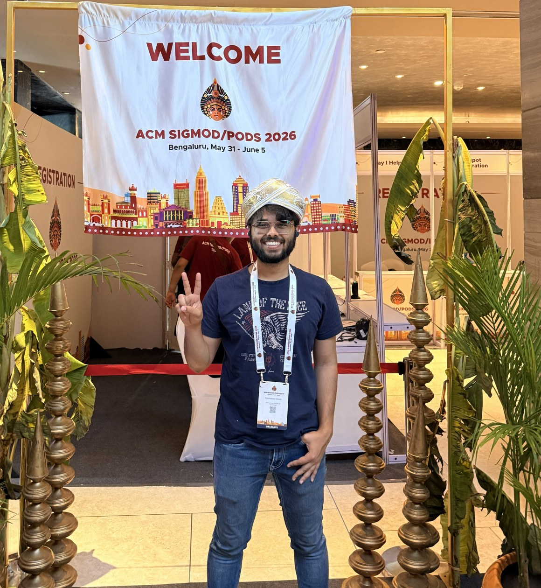
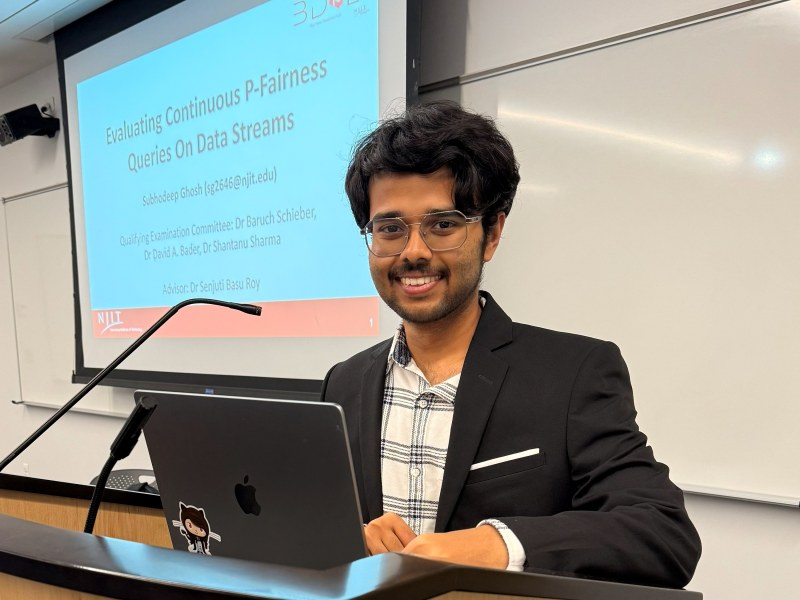
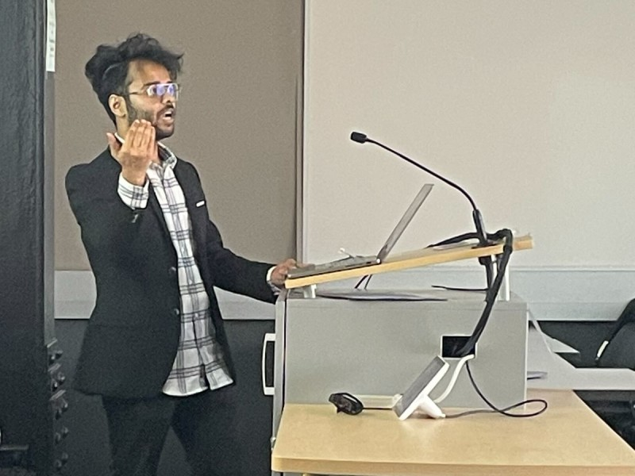
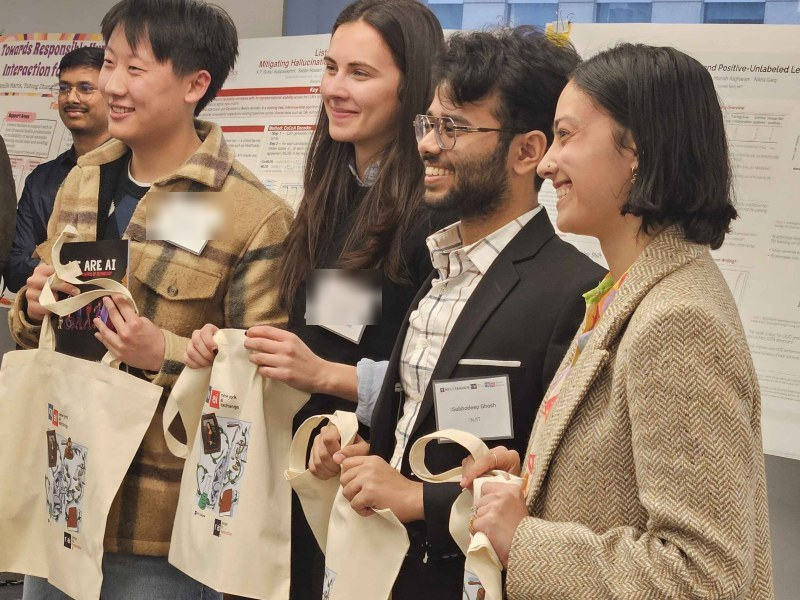
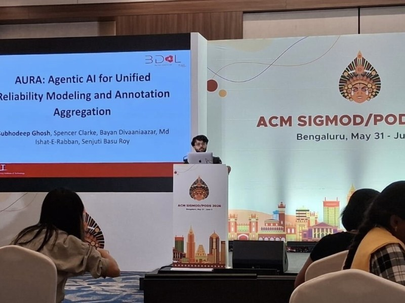

Algorithmic Fairness
Enforcing group fairness as a first-class constraint rather than a post-hoc correction. Developing optimal reordering algorithms for streaming output and submodular selection under multiple fairness attributes.
Fairness and Accountability in Algorithmic Decision-Making

I am a PhD researcher at the New Jersey Institute of Technology, working in the Big Data Analytics Lab under Professor Senjuti Basu Roy. My work focuses on making algorithmic decisions accountable — treating fairness as a constraint to be enforced rather than a metric to be reported after the fact.
Jun – Jul 2023
Big Data Analytics Lab, NJIT
Led to a VLDB Workshop paper and a talk at the Undergraduate Summer Research & Innovation Symposium.
Sep 2024 – Present
New Jersey Institute of Technology
Responsible AI, fairness in algorithmic decision-making, and agentic-AI workflows. GPA 3.917.
Sep 2024 – Aug 2025
Big Data Analytics Lab, NJIT
Advised by Professor Senjuti Basu Roy, on work submitted to SIGMOD, VLDB and KDD.
Sep 2025 – May 2026
Computer Science Department, NJIT
CS482 Data Mining, CS435 Advanced Data Structures, CS114 Introduction to CS-II.
13 October 2025
New Jersey Institute of Technology
“Evaluating Continuous P-Fairness Queries on Data Streams,” examined by Dr Baruch Schieber, Dr David A. Bader and Dr Shantanu Sharma.

26 March 2026
Newark, New Jersey

27 March 2026
New York, New York

4 June 2026
Bengaluru, India

Enforcing group fairness as a first-class constraint rather than a post-hoc correction. Developing optimal reordering algorithms for streaming output and submodular selection under multiple fairness attributes.
Building agent-based systems that carry their own provenance. Current work spans reliability modeling for human-in-the-loop annotation and scalable knowledge management for fusion experiment logbooks.
Interrogating what models actually encode. Research covers local intrinsic dimensionality for feature selection, adversarial robustness, and neutralizing socially entrenched bias in embedding spaces.
A curated collection of my most impactful contributions to the field. For a comprehensive list, please visit the publications page.
I am always open to research collaborations, speaking
invitations, and conversations about responsible AI.